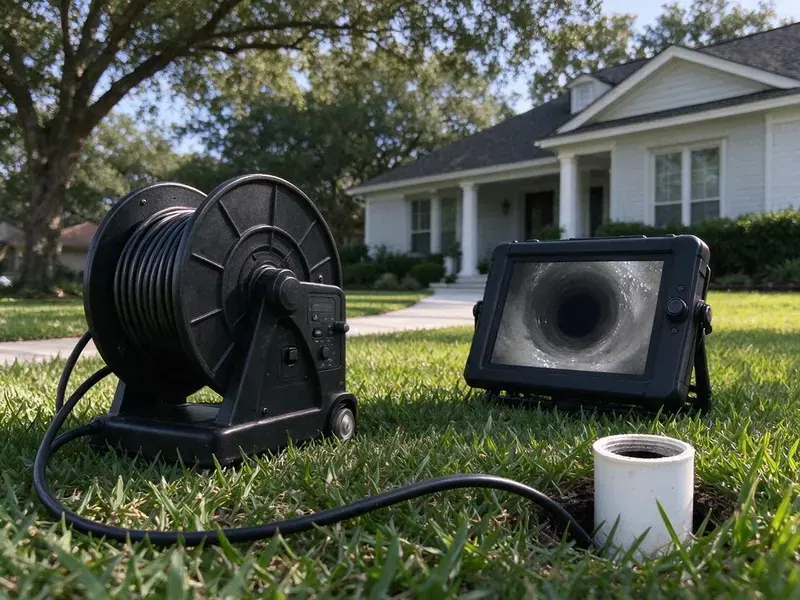
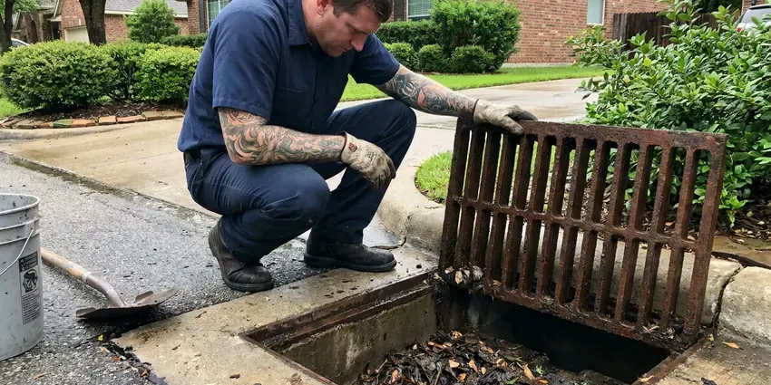
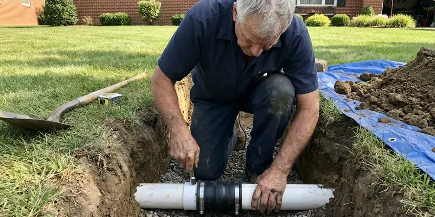

Sewer Cleaning in Parker, CO
Our Parker, CO sewer techs cut roots, jet grease and show you the line on video before they leave.
- Same-Day Sewer Service
- Price Before We Start
- Experienced Sewer Techs
- Root Cutting and Jetting

Book Sewer Cleaning in Parker, CO
We clear the main, run a camera and show you the footage before we leave.
Sewer Cleaning in Parker, CO for Backups, Slow Drains and Odors
GFR Plumbing clears sewer blockages throughout Parker, CO with heavy sectional machines, root saws and jetters. We pick the tool to fit the clog. A root saw handles intrusions, and a jetter is the better choice for grease, sludge and scale.
Our expertise includes:
- Descaling chains for older cast iron
- Hydro jetting to scour grease and scale from main lines
- Scheduled maintenance for root-prone lines

Additional Drain Services Services in Parker, CO
From stubborn kitchen clogs to main sewer backups, our drain services in Parker, CO clear the line and keep it clear with camera-verified results.




Parker storm drain cleaning specialists

Parker sewer line replacement specialists


Customers
Why Choose GFR Plumbing for Sewer Cleaning in Parker, CO?
Multiple slow drains point to the main. Odors are another clue. An early cleaning keeps sewage where it belongs and spares you the cost of cleanup and drying.
- Fix the Cause, We look for why the sewer stopped, so you are not back on the phone in a month.
- Local Experience, GFR Plumbing knows the soil and tree types around Parker, CO that push roots into sewer lines.
- Root Removal, Our cutting heads cut through root masses that grow into joints and cracks in older sewer pipe.
Citywide Coverage
Sewer cleaning is a phone call away anywhere in Parker. Same tools, same rates. Distance inside our service area does not change the price or the equipment that shows up.
Experienced Team
Each tech at GFR Plumbing trains on cameras, locators and jetters. Ride-alongs come first. By the time a tech runs sewer calls alone, they have cleared hundreds of main lines under supervision and seen most of the problems a house can throw at them.
Safety-First Approach
We follow local plumbing codes in Parker, CO on every job. Routine clearing is permit-free. Any repair, like a new cleanout or a pipe section, goes through the permit and inspection your city requires, and we handle that paperwork for you.
Trusted Certified Parker Plumbing Services Professionals
At GFR Plumbing, we take pride in licensed, certified plumbing services throughout Parker, CO. Credentials matter in this trade. Our plumbers hold recognized industry credentials, and they follow strict safety and quality rules on every repair, installation and maintenance call we run.
Call Us Now PHCC Plumbing Contractor Recognition
PHCC Plumbing Contractor Recognition Better Business Bureau (BBB) Accreditation
Better Business Bureau (BBB) Accreditation Angi Certified Pro
Angi Certified Pro ISO 9001 Quality Management Certification
ISO 9001 Quality Management CertificationSewer Cleaning Services in Parker, CO
Emergency Sewer Backup Cleaning in Parker
Sewage coming up through a shower or floor drain? Stop using water. A tech arrives ready to clear the main and start cleanup, with the goal of restoring flow before anything else, then we disinfect the area and take photos for an insurance claim.

Shop and Restaurant Sewers in Parker
Busy buildings clog more often. Volume is the reason. Our commercial setup handles bigger pipe, and we schedule around your hours so customers never notice.
Apartment and Strip Center Sewers in Parker, CO
Shared laterals carry heavy loads. Several units, one pipe. We set up jetting on a schedule that fits your pump-out cycle and do the work when the building is quiet, with a written report and a video file on request.
Cast Iron Sewer Cleaning in Parker, CO
Cast iron rots from the inside. Many newer homes across Colorado use PEX with manifold systems, which handle freezing better than rigid pipe but still need protection. Scale builds on top while the bottom channels out. Aggressive cutters can break through thin spots, so we use descaling chains and careful jetting made for older iron, which restores flow and gives a clear view of the remaining pipe wall on camera.
Tree Root Removal in Parker, CO Sewers
Roots get in through tiny gaps. Then they fill the pipe. A root saw on a sectional cable cuts the mass loose so we can pull it out through the cleanout, and a jetter can follow to flush out the fine root hairs left on the pipe wall, and a camera shows where they are getting in.
Video Inspection Before Cleaning in Parker, CO
Some lines need a look first. Old pipe especially. A camera run before cleaning shows whether the line has roots, a broken section or a grease plug, which tells us whether to cable, jet or stop and talk about repair.
Commercial Sewer Cleaning in Parker, CO
Commercial lines take a beating. Restaurants fight grease every day. In offices and shops, paper and odd objects flushed in restrooms are the usual cause of a stopped lateral, and our heavy jetters handle 6 inch commercial pipe without much trouble.

Preventative Sewer Maintenance in Parker
Roots come back after cutting. Plan on regrowth in 12 to 18 months. Putting a root-prone main on a yearly cleaning schedule keeps the growth small enough that it never stops the line, and it costs far less than an after-hours emergency call.
Sewer Line Cleaning Near Me in Parker, CO
Soil, tree types and pipe materials vary by neighborhood. Each area has its quirks. Knowing what is likely in the ground lets us move faster and recommend repairs that fit the pipe you actually have.
Our techs live and work around Parker. They see these houses every week. That local experience helps them guess where a cleanout is likely to be, what the pipe is made of and how deep the line runs before the camera ever goes in.
GFR Plumbing at a Glance
- Licensed and insured plumbers serving Parker, CO
- 24/7 emergency service with same-day scheduling
- Clear written estimates, no hidden fees
- 4.8-star rated by 750+ Colorado customers
Parker Map
Parker Information
- Population
- 62,743
- Area codes
- 303/720/970
- Service area
- Parker and communities within 40 miles
- Nearby
- Centennial, Castle Rock, Highlands Ranch, Aurora
Ground movement in Parker, CO puts stress on buried sewer pipe, and stressed joints pull apart enough for roots to get in over time. Basements are common in Colorado, and shifting soil can crack floor drains, sewer lines, and basement walls over time.
Talk to a Plumber
Call GFR Plumbing for honest, reliable plumbing from people who know the trade in Parker, CO.
Our Specialized Plumbing Services in Parker, CO
At GFR Plumbing, we handle the full list of plumbing services across Parker, CO. We go from leak detection all the way to full system installations, for homes and commercial buildings, and we do it quickly at a fair price. Take a look at our core services below:


How a Sewer Cleaning Visit Works in Parker, CO
Our sewer cleaning follows the same order every time, so nothing gets missed in Parker.
Call or Book
Call GFR Plumbing at (720) 727-9398 and tell us which drains are backing up. A few questions help us bring the right machine.
Find the Blockage
Your tech locates the cleanout and checks the line. On repeat backups, the camera goes in first.
Clear the Main
We cable or jet the line, depending on the cause. The goal is a pipe open edge to edge.
Frequently Asked Questions About Sewer Cleaning in Parker
Expect $250 to $700 in Parker. The clog drives the cost. Heavy roots, jetting and a camera run all move the price up, while a quick cable job stays near the bottom.
No, not for cleaning. Clearing a blockage needs no permit. Major repair or replacement found during cleaning will likely need a permit, which we pull for you.
Toilets that gurgle when a sink drains. Water in the tub is another. Sewer odors in the yard or a soggy spot near the cleanout can also point to a blocked or broken main, especially if several fixtures are slow at once.
Often not without a rider. Look for a backup endorsement. Standard homeowners policies frequently exclude sewer backup unless you add a specific rider, and we can provide photos and notes to support any claim you file.
Rental augers often lack the power and cutters to clear roots. They also get stuck. With a professional you get the right head and a camera, so you know what is in the pipe and whether it will clog again.
Water rising in the tub when the toilet flushes. It is the surest sign. Slow drains throughout the house and odors near floor drains also point to a main line problem.
Most take 1 to 2 hours. Some take longer. Heavy roots, a long run to the street or a missing cleanout that means pulling a toilet can all add time to the job.
High-pressure water cleaning. The jet scours the whole pipe. We use it for grease, sludge and fine roots, for preventive maintenance and for lines where a cable opens the clog but leaves buildup on the walls.
What Our Customers Say About Our Plumbing Experts

Megan L.
Our upstairs tub drained so slowly that every shower turned into a bath. GFR Plumbing pulled a wad of hair out of the stopper and then snaked the line past the trap. Three months later it still drains fast.
Drain Cleaning · Castle Rock, CO
Daniel K.
A pipe burst in the garage ceiling at 11 at night. Someone answered on the second ring, and the plumber was in my driveway about fifty minutes later. He shut off the main, cut out the split section, and had water back on before 2 am.
Emergency Plumbing · Highlands Ranch, CO
Kevin O.
Before buying our house I paid for a sewer camera inspection. GFR Plumbing found a belly in the line that held standing water about forty feet from the cleanout. We used the video to get the sellers to fix it before closing.
Sewer Camera Inspection · Parker, COMarcus H.
Grease from the fryer line kept clogging the kitchen drain at my diner. GFR Plumbing hydro jetted the line after closing, showed me the buildup on camera, and set us up on a quarterly cleaning so it does not catch us on a Friday again.
Drain Cleaning · Aurora, CO
Diane F.
My kitchen faucet had dripped for months and I finally got tired of hearing it at night. GFR Plumbing came out the next morning, replaced the cartridge and the O rings, and tightened a loose base that was letting water under the sink.
Faucet Repair · Aurora, COJames P.
Our restaurant had a slow leak at the hand sink that was rotting the cabinet base. GFR Plumbing came in at six in the morning before prep, replaced the trap and both supply lines, and was packed up before my first cook clocked in.
Commercial Plumbing · Highlands Ranch, CO